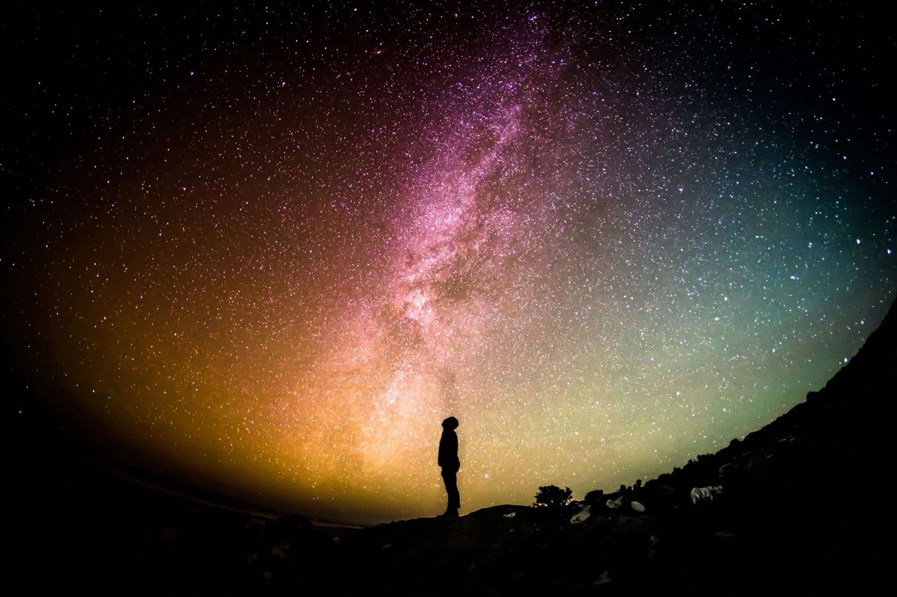
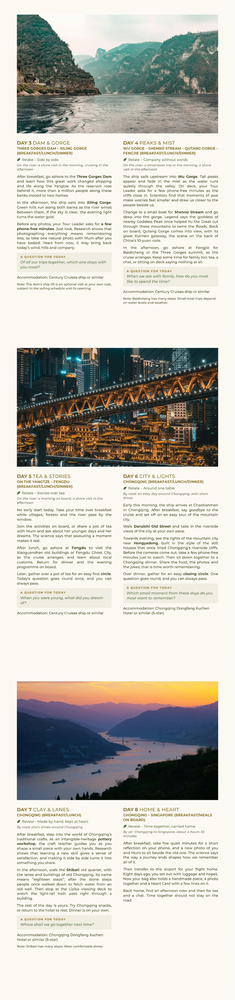
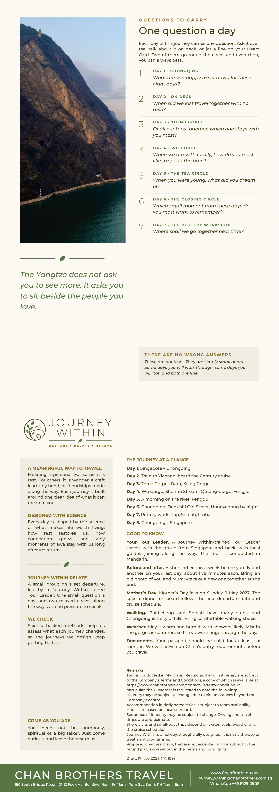
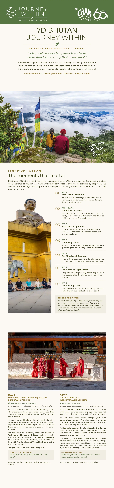
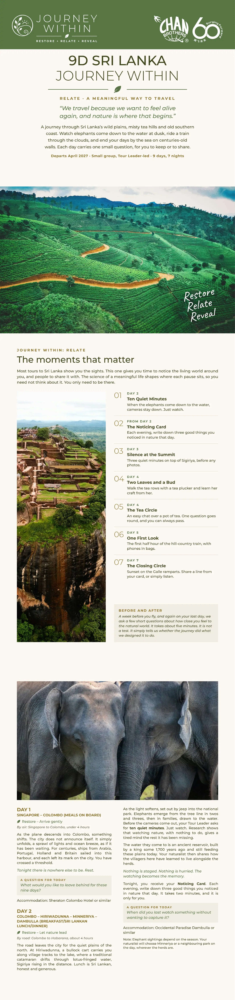
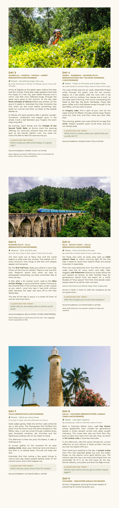
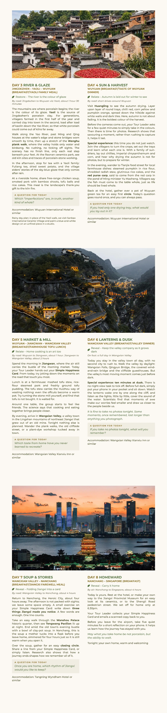
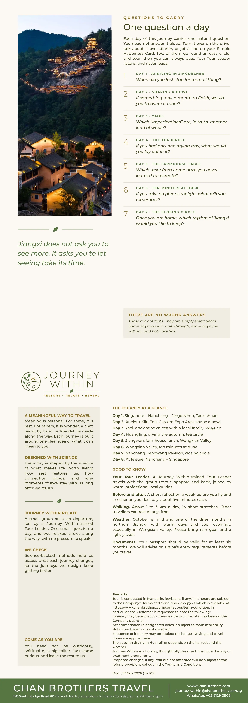
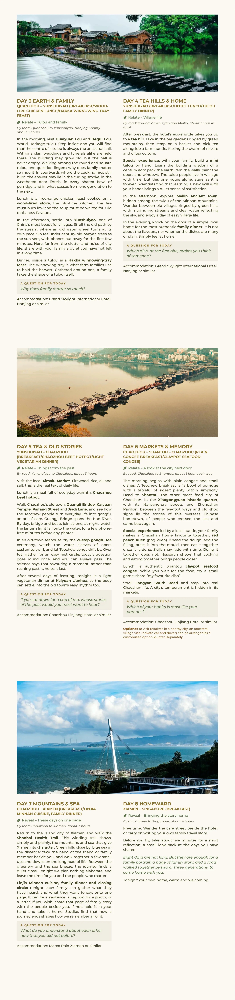

MAR 2027 · HIMALAYAN & INDIAN SUBCONTINENT · 7 DAYS
Bhutan
“We travel because happiness is easier to understand in a country that measures it.”

JOURNEY WITHIN · 心旅
Journeys designed around what matters to you, with the science of a meaningful life.
THREE WAYS TO TRAVEL
Choose one to see the journeys.
New to Journey Within?
DESIGNED WITH SCIENCE
Decades of research show what makes an experience stay with us: awe, gratitude, rest and real connection. We build these into the journey.
1
We start with why you want to travel.
2
Research shapes where each moment sits, from the first quiet morning to the last evening.
3
We use science-backed methods to assess each journey, so we know it did what it was designed to do.
Grounded in peer-reviewed positive psychology research from leading universities.
MEANING IS PERSONAL
Everyone has a different answer. We ask first, then design the journey around yours.
I travel
Days and nights designed for deep rest.
I travel
Mountains, temples and open sky that change how you see things.
I travel
Race day at Suzuka, trackside, with people who love speed as much as you do.
I travel
A few days together, with nothing else asking for your attention.
I travel
The place at the top of her list, made easy for her, while you can still go together.
I travel
寻根. Walk the village your grandparents left, and meet the family who stayed.
With your own people, with a small group, or with your organisation.
RELATE · WITH A TOUR LEADER
Join a small group, led by a Tour Leader trained in Journey Within. Every journey begins with one line: why we travel there. Pick a month or a region to see what departs.
{{ countLabel }}
Prefer your own dates? Travel privately, any time of year.
REVEAL · PARTNER JOURNEYS
For schools, charities, interest groups and companies. We design the journey with you, around a purpose your people share.
Have a group in mind? Start a conversation.
RESTORE · A PRIVATE JOURNEY
A private journey for couples, families and friends, anywhere you can dream of, at any time of year. These are sample journeys. Tell us what you hope for, and we shape every day around it.
REGION
LENGTH
{{ rCount }}
No sample journey fits both choices yet. Tell us what you have in mind and we will shape one for you.
* Land price in Singapore dollars, per person, twin sharing, based on two travelling. These are sample itineraries. The final itinerary, hotels and price are confirmed at booking.
The following costs are excluded:
IN THEIR WORDS
[GUEST QUOTE, from our first Bhutan journey]
[GUEST QUOTE]
[GUEST QUOTE]
Dates and details can come later. We would like to hear your reason first.
{{ vTitle }}
Enquire










